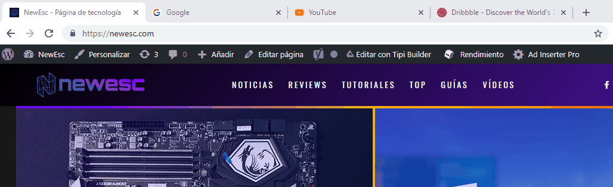

API Page Visibility
Visibilidad
Definicion
Esta API informa a la aplicación acerca del estado actual de
visibilidad del documento, por ejemplo, cuándo se oculta la pestaña o se minimiza la ventana,
de modo que nuestro código pueda decidir qué hacer mientras nadie mira.
Estado
La API incluye una propiedad para informar del estado actual
VisibilityState:Esta propiedad devuelve el estado de visibilidad actual del documento.
Los valores disponibles son hidden y visible.
Visibilitychange:Este evento se desencadena cuando cambia el valor de la propiedad
visibilityState.

Ejemplo 1
Ejemplo 2
Sistema de Deteccion Completo
Los navegadores no cambian el valor de la propiedad visibilityState cuando el usuario
abre una nueva ventana. La API solo es capaz de detectar el cambio de visibilidad cuando la
pestaña se oculta por otra o cuando la ventana se minimiza. Para determinar el estado de
visibilidad en cualquier circunstancia, podemos complementar la API con los siguientes
eventos que facilita el objeto Window.
blur:Este evento se desencadena cuando la ventana pierde foco (también se
desencadena por los elementos).
focus:Este evento se desencadena cuando la ventana se enfoca de nuevo (también se
desencadena por los elementos).
En la función iniciar() agregamos listeners para los tres eventos. Se
declara la función cambiarestado() para responder a los eventos y procesar el valor
correspondiente al estado actual. Este valor queda determinado por cada uno de los eventos.
El evento blur envía el valor hidden; el evento focus envía el valor visible y el evento
visibilitychange envía el valor actual de la propiedad visibilityState.
Ejemplo 1
Extra